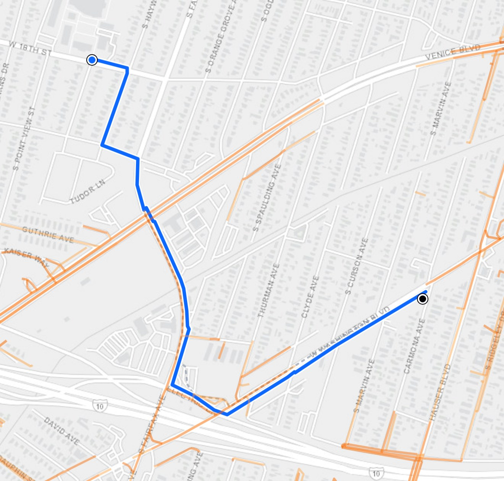

School
Home
LOS ANGELES · 2020–2024
Safe Routes
to School
Walking directions for LA students, scored from 85,634 real crime records.
3rd internationally
· Code for Transportation
safe-routes-la.github.io
calmer
worst in LA
The route it picks
Esri, HERE, Garmin, © OpenStreetMap · LAPD via data.lacity.org